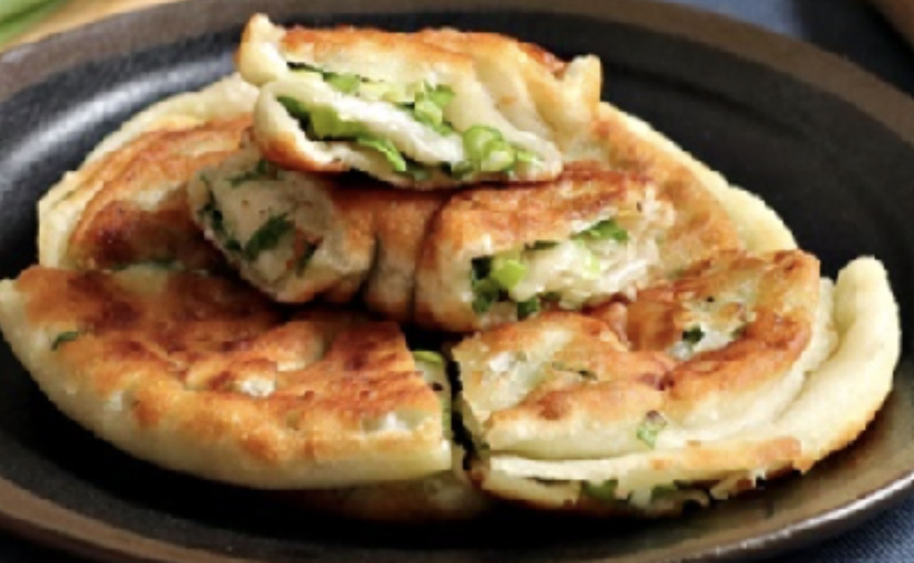

#23 - SCALLION PANCAKE - 蔥油餅
Simple ingredients, easy to make and delicious. Scallion pancake is a popular street food in many Asian counties. There are many versions of this dish. This recipe is one of my favorite version.

INGREDIENTS:
- 4 scallion (green onion)
- 3 TBSP oil
- 3 TBSP flour
- 1 tsp salt
- Vegetable oil for frying
Dough:
- 2 Cups all-purpose flour
- ½ tsp salt
- ½ cup hot water
- ¼ cup room temp water
Directions:
- Wash and chop the green onion into small pieces.
- Put the flour in a big bowl. Mix in salt.
- Add the hot water into the bowl, mixing with a chopstick or wooden spatula.
- Add in the warm water. Gently mix with hand to form a ball. Rest for 20 minutes.
- Divide the dough into 4 equal portions.
- Take one portions of the dough, with a rolling pin; roll the dough out a 10-inch circle.
- Spread 2 tsp vegetable oil, 2 tsp flour, ¼ tsp salt and ¼ of the green onion evenly.
- Lifting the edge of the dough, roll it up like a yoga mat. Squeeze the two ends tight.
- Pick up one end, and coil the dough into a disk shape. Press down on the dough slightly with hand.
- Roll with a rolling pin into a 6-inch circle.
- Heat a frying pan (preferable cast iron) with generous amount of oil.
- When the oil is hot, put a pancake into the oil. Fry until golden brown, Flip the pancake and fry the other side until golden brown.
- Repeat step 6-10 for the rest of the dough.
- Slice the pancake into pieces and serve hot.
(Serves 1 person)
Note:
- You may make multiple portions of this recipe. Freeze them after completing step 10. Stack the finished pancake flat on top of each other separating with a piece of plastic or wax paper. Then put them in a sealed ziplock bag and put it flat
in the freezer until it is frozen. Defrost and continue with step 11 & 12 when ready to eat.